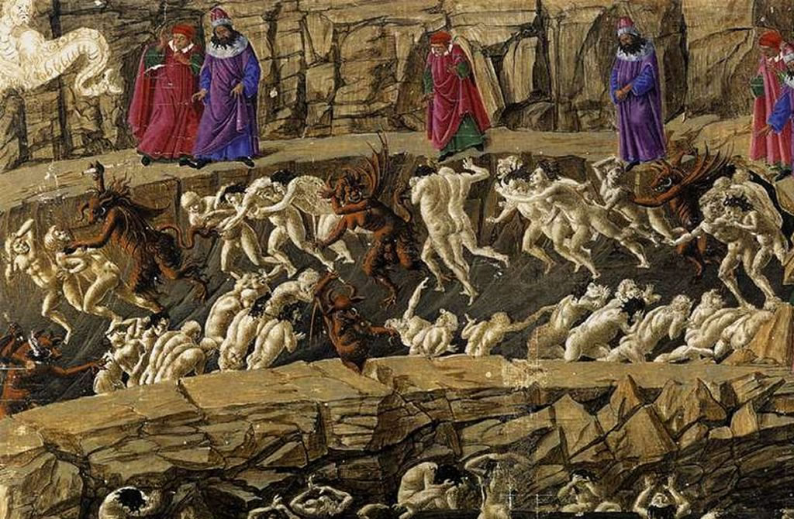

Travel

The Eighth Circle of Hell, known as Malebolge and housing people who have committed fraud, has a relatively unique layout compared to the other circles. It houses ten concentric pouches with bridges and thin strips of land between each one. Luckily, this means you'll have a good view of each pouch without needing to enter it, although you are free to if you wish. Walk across the land bridge and observe the people and punishments in each bolgia.
In the First Bolgia, panderers (provisioners of prostitutes) and seducers (provisioners of sexual intercourse) march in two files as they are whipped by demons. You can find Jason here for his seduction of Medea.
In the Second Bolgia, flatterers (people who give excessive compliments) fight each other while covered in excrement, representating the flattering lies they told in life. You can find Thais, featured in Terence's play Eunuchus, here for flattering her lovers.
In the Third Bolgia, simoniacs (people who sell church offices) are hung upside down in a sort of baptismal font with fire burning the soles of their feet. Numerous popes can be found here, trading places with each other under the fire.
In the Fourth Bolgia, sorcerers (fortune tellers, astrologers, and other false prophets) have their heads twisted around their bodies, forced to constantly walk in reverse. You can find Tiresias here for his constant prophesying in life.
In the Fifth Bolgia, barrators (corrupt politicians) are submerged in boiling tar and guarded by clawed demons. The demons are called Malebranche, and their leader is a demon named Malacoda. The bridge to the Sixth Bolgia was collapsed in an earthquake that rattled Hell upon the death of Christ, so you will need to speak to Malacoda to get some of his demons to carry you across.
In the Sixth Bolgia, hypocrites are forced to constantly walk wearing weighted lead robes. While the robes are brilliantly sparkling on the outside, they are very heavy on the inside, representing the double standard of the hypocrite. Here, you can find the greatest hypocrite: Caiaphas, the High Priest of Israel under Pontius Pilate, who convinced the Pharisees to crucify Jesus. He is crucified to the floor of this bolgia, and you can walk on top of him along with the sinners here if you choose to descend into the pouch.
In the Seventh Bolgia, thieves inhabit a pit where they are constantly bitten by snakes and lizards, being transformed into beasts themselves as they lose their identities. Here, you can encounter Cacus, a Centaur with snakes and a phoenix covering him, punishing the thieves.
In the Eighth Bolgia, counsellors of fraud are individually covered in flames as they move around. Here, you can find Ulysses, who is damned here for the Trojan Horse plot. If you talk with him, you can hear the story of how he died, convincing his crew to come with him and find undiscovered land and getting them all killed in the process.
In the Ninth Bolgia, sowers of discord are hacked into pieces by demons, needing to carry their ruined bodies around the bolgia as they heal, until they return to where they were and start the process again. Here, you can find Muhammad, the founder of Islam, and his son-in-law Ali, who caused the schism between the Sunni and the Shia.
In the Tenth Bolgia, falsifiers (alchemists, counterfeiters, and perjurers) are infected with disease while attacking each other. Do not watch these souls for too long; their behavior is should only be seen to be condemned, not to be entertained.
Tip: Traversing the Eighth Circle
You will probably notice that the farther down you get through Hell, the larger the circles become and the more hostile and difficult they become to cross. This is not a coincidence; as you get farther down through Hell, the environment becomes more violent and difficult to bear. Press on and tread lightly, as you are almost finished by the time you get here. The Eighth Circle is by far the largest.
At the bottom of the Eighth Circle lies the Central Well, which leads to the Ninth Circle of Hell. Giants guard the well, and you'll need one of them to lower you down to the Ninth Circle. A good bet is the Greek wrestler Antaeus, who helped lead our founder Dante down when he was traveling here with Virgil. If you ask him, he should be able to carry you down as well.